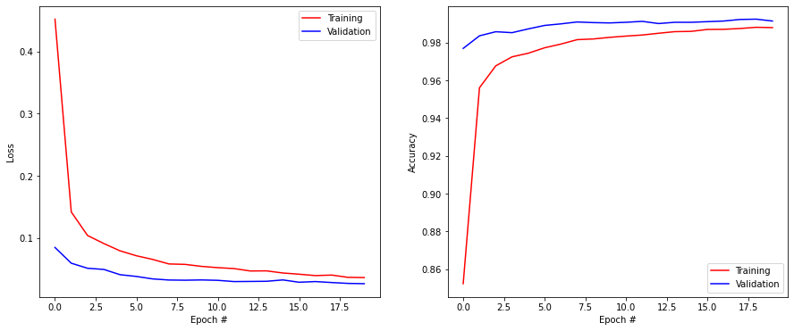
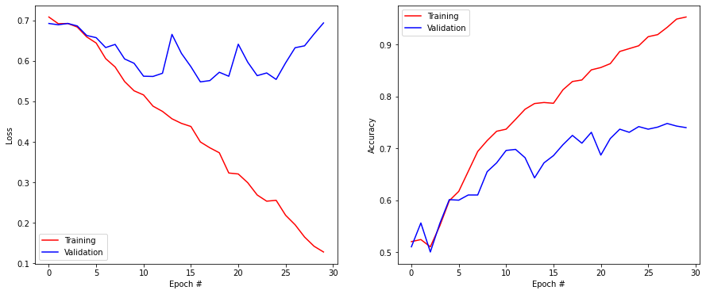
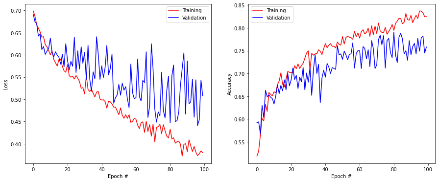
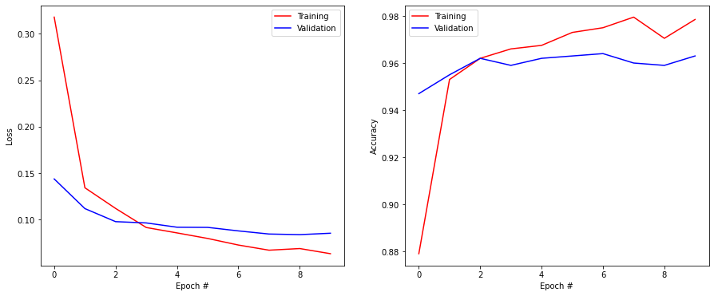

import numpy as np
import matplotlib.pyplot as plt
rng = np.random.default_rng()
import tensorflow as tfTransfer learning
The goal of the exercise is to investigate data augmentation and transfer learning on a very small dataset (2000 training images).
The code is based on the keras tutorial:
The data is provided as part of a Google tutorial:
Loading the cats and dogs data
The data we will use is a subset of the “Dogs vs. Cats” dataset dataset available on Kaggle, which contains 25,000 images. Here, we use only 1000 dogs and 1000 cats to decrease training time and make the problem harder.
The following cell downloads the data and decompresses it in /tmp/ (it will be erased at the next restart of your computer).
!wget --no-check-certificate \
https://storage.googleapis.com/mledu-datasets/cats_and_dogs_filtered.zip \
-O /tmp/cats_and_dogs_filtered.zip
import os
import zipfile
local_zip = '/tmp/cats_and_dogs_filtered.zip'
zip_ref = zipfile.ZipFile(local_zip, 'r')
zip_ref.extractall('/tmp')
zip_ref.close()--2022-11-15 10:29:45-- https://storage.googleapis.com/mledu-datasets/cats_and_dogs_filtered.zip
Resolving storage.googleapis.com (storage.googleapis.com)... 2a00:1450:4005:801::2010, 2a00:1450:4005:80b::2010, 2a00:1450:4005:802::2010, ...
Connecting to storage.googleapis.com (storage.googleapis.com)|2a00:1450:4005:801::2010|:443... connected.
HTTP request sent, awaiting response... 200 OK
Length: 68606236 (65M) [application/zip]
Saving to: ‘/tmp/cats_and_dogs_filtered.zip’
/tmp/cats_and_dogs_ 100%[===================>] 65,43M 5,39MB/s in 14s
2022-11-15 10:29:59 (4,61 MB/s) - ‘/tmp/cats_and_dogs_filtered.zip’ saved [68606236/68606236]
All we have is a bunch of *.jpg images organized in a training and validation set, separated by their binary class dog vs. cat:
cats_and_dogs_filtered/
train/
dogs/
dog001.jpg
dog002.jpg
...
cats/
cat001.jpg
cat002.jpg
...
validation/
dogs/
dog001.jpg
dog002.jpg
...
cats/
cat001.jpg
cat002.jpg
...Feel free to download the data on your computer and have a look at the images directly.
The next cell checks the structure of the image directory:
base_dir = '/tmp/cats_and_dogs_filtered'
train_dir = base_dir + '/train'
validation_dir = base_dir + '/validation'
print('total training cat images:', len(os.listdir(train_dir + '/cats')))
print('total training dog images:', len(os.listdir(train_dir + '/dogs')))
print('total validation cat images:', len(os.listdir(validation_dir + '/cats')))
print('total validation dog images:', len(os.listdir(validation_dir + '/dogs')))total training cat images: 1000
total training dog images: 1000
total validation cat images: 500
total validation dog images: 500The next cell visualizes some cats and dogs from the training set.
import matplotlib.image as mpimg
fig = plt.figure(figsize=(16, 16))
idx = rng.choice(1000-8, 1)[0]
next_cat_pix = [os.path.join(train_dir + '/cats', fname) for fname in os.listdir(train_dir + '/cats')[idx:idx+8]]
next_dog_pix = [os.path.join(train_dir + '/dogs', fname) for fname in os.listdir(train_dir + '/dogs')[idx:idx+8]]
for i, img_path in enumerate(next_cat_pix+next_dog_pix):
# Set up subplot; subplot indices start at 1
ax = plt.subplot(4, 4, i + 1)
ax.axis('Off') # Don't show axes (or gridlines)
img = mpimg.imread(img_path)
plt.imshow(img)
plt.show()
In order to train a binary classifier on this data, we would need to load the images and transform them into Numpy arrays that can be passed to tensorflow. Fortunately, keras provides an utility to do it automatically: ImageDataGenerator. Doc:
https://keras.io/api/preprocessing/image/
The procedure is to create an ImageDataGenerator instance and to create an iterator with flow_from_directory that will return minibatches on demand when training the neural network. The main advantage of this approach is that you do not need to load the whole dataset in the RAM (not possible for most realistic datasets), but adds an overhead between each minibatch.
datagen = tf.keras.preprocessing.image.ImageDataGenerator(rescale=1./255)
generator = datagen.flow_from_directory(
directory, # This is the source directory for training images
target_size=(150, 150), # All images will be resized to 150x150
batch_size=64,
# Since we use binary_crossentropy loss, we need binary labels
class_mode='binary')The rescale argument makes sure that the pixels will be represented by float values between 0 and 1, not integers between 0 and 255. Unfortunately, it is not possible (or very hard) to perform mean-removal using this method. The image data generator accepts additional arguments that we will discuss in the section on data augmentation. directory must be set to the folder containing the images. We ask the generator to resize all images to 150x150 and will use a batch size of 64. As there are only two classes cat and dog, the labels will be binary (0 and 1).
Q: Create two generators train_generator and validation_generator for the training and validation sets respectively, with a batch size of 64.
# All images will be rescaled by 1./255
train_datagen = tf.keras.preprocessing.image.ImageDataGenerator(rescale=1./255)
val_datagen = tf.keras.preprocessing.image.ImageDataGenerator(rescale=1./255)
# Flow training images in batches
train_generator = train_datagen.flow_from_directory(
train_dir,
target_size=(150, 150),
batch_size=64,
class_mode='binary')
# Flow validation images in batches
validation_generator = val_datagen.flow_from_directory(
validation_dir,
target_size=(150, 150),
batch_size=64,
class_mode='binary')Found 2000 images belonging to 2 classes.
Found 1000 images belonging to 2 classes.Q: Sample a minibatch from the training generator by calling next() on it (X, t = train_generator.next()) and display the first image. Call the cell multiple times.
X, t = train_generator.next()
print(X.shape)
plt.figure()
plt.imshow(X[0, :, :, :])
plt.axis("Off")
plt.show()(64, 150, 150, 3)
Functional API of Keras
In the previous exercises, we used the Sequential API of keras, which stacks layers on top of each other:
model = tf.keras.Sequential()
model.add(tf.keras.layers.Input((28, 28, 1)))
model.add(tf.keras.layers.Conv2D(32, (3, 3), activation='relu')
model.add(tf.keras.layers.MaxPooling2D(pool_size=(2, 2)))
model.add(tf.keras.layers.Flatten())
model.add(tf.keras.layers.Dense(10, activation='softmax'))In this exercise, we will use the Functional API of keras, which gives much more freedom to the programmer. The main difference is that you can explicitly specify from which layer a layer should take its inputs:
inputs = tf.keras.layers.Input((28, 28, 1))
x = tf.keras.layers.Conv2D(32, (3, 3), activation='relu')(inputs)
x = tf.keras.layers.MaxPooling2D(pool_size=(2, 2))(x)
x = tf.keras.layers.Flatten()(x)
outputs = tf.keras.layers.Dense(10, activation='softmax')(x)
model = tf.keras.Model(inputs, outputs)This allows to create complex architectures, for examples with several output layers.
Q: Modify your CNN of last exercise so that it is defined with the Functional API and train it on MNIST.
# Fetch the MNIST data
(X_train, t_train), (X_test, t_test) = tf.keras.datasets.mnist.load_data()
print("Training data:", X_train.shape, t_train.shape)
print("Test data:", X_test.shape, t_test.shape)
# Normalize the values
X_train = X_train.reshape(-1, 28, 28, 1).astype('float32') / 255.
X_test = X_test.reshape(-1, 28, 28, 1).astype('float32') / 255.
# Mean removal
X_mean = np.mean(X_train, axis=0)
X_train -= X_mean
X_test -= X_mean
# One-hot encoding
T_train = tf.keras.utils.to_categorical(t_train, 10)
T_test = tf.keras.utils.to_categorical(t_test, 10)
# Delete all previous models to free memory
tf.keras.backend.clear_session()
# Functional model
inputs = tf.keras.layers.Input((28, 28, 1))
x = tf.keras.layers.Conv2D(32, (3, 3), activation='relu', padding='valid')(inputs)
x = tf.keras.layers.MaxPooling2D(pool_size=(2, 2))(x)
x = tf.keras.layers.Dropout(0.5)(x)
x = tf.keras.layers.Conv2D(64, (3, 3), activation='relu', padding='valid')(x)
x = tf.keras.layers.MaxPooling2D(pool_size=(2, 2))(x)
x = tf.keras.layers.Dropout(0.5)(x)
x = tf.keras.layers.Flatten()(x)
x = tf.keras.layers.Dense(150, activation='relu')(x)
x = tf.keras.layers.Dropout(0.5)(x)
outputs = tf.keras.layers.Dense(10, activation='softmax')(x)
model = tf.keras.Model(inputs, outputs)
# Learning rule
optimizer = tf.keras.optimizers.SGD(learning_rate=0.01, decay=1e-6, momentum=0.9, nesterov=True)
# Loss function
model.compile(
loss='categorical_crossentropy', # loss
optimizer=optimizer, # learning rule
metrics=['accuracy'] # show accuracy
)
print(model.summary())
history = tf.keras.callbacks.History()
model.fit(
X_train, T_train,
batch_size=64,
epochs=20,
validation_split=0.1,
callbacks=[history]
)
score = model.evaluate(X_test, T_test, verbose=0)
print('Test loss:', score[0])
print('Test accuracy:', score[1])
plt.figure(figsize=(15, 6))
plt.subplot(121)
plt.plot(history.history['loss'], '-r', label="Training")
plt.plot(history.history['val_loss'], '-b', label="Validation")
plt.xlabel('Epoch #')
plt.ylabel('Loss')
plt.legend()
plt.subplot(122)
plt.plot(history.history['accuracy'], '-r', label="Training")
plt.plot(history.history['val_accuracy'], '-b', label="Validation")
plt.xlabel('Epoch #')
plt.ylabel('Accuracy')
plt.legend()
plt.show()Training data: (60000, 28, 28) (60000,)
Test data: (10000, 28, 28) (10000,)2022-11-15 10:30:50.851406: I tensorflow/core/common_runtime/pluggable_device/pluggable_device_factory.cc:305] Could not identify NUMA node of platform GPU ID 0, defaulting to 0. Your kernel may not have been built with NUMA support.
2022-11-15 10:30:50.851519: I tensorflow/core/common_runtime/pluggable_device/pluggable_device_factory.cc:271] Created TensorFlow device (/job:localhost/replica:0/task:0/device:GPU:0 with 0 MB memory) -> physical PluggableDevice (device: 0, name: METAL, pci bus id: <undefined>)Metal device set to: Apple M1 Pro
systemMemory: 16.00 GB
maxCacheSize: 5.33 GB
Model: "model"
_________________________________________________________________
Layer (type) Output Shape Param #
=================================================================
input_1 (InputLayer) [(None, 28, 28, 1)] 0
conv2d (Conv2D) (None, 26, 26, 32) 320
max_pooling2d (MaxPooling2D (None, 13, 13, 32) 0
)
dropout (Dropout) (None, 13, 13, 32) 0
conv2d_1 (Conv2D) (None, 11, 11, 64) 18496
max_pooling2d_1 (MaxPooling (None, 5, 5, 64) 0
2D)
dropout_1 (Dropout) (None, 5, 5, 64) 0
flatten (Flatten) (None, 1600) 0
dense (Dense) (None, 150) 240150
dropout_2 (Dropout) (None, 150) 0
dense_1 (Dense) (None, 10) 1510
=================================================================
Total params: 260,476
Trainable params: 260,476
Non-trainable params: 0
_________________________________________________________________
None
Epoch 1/202022-11-15 10:30:51.651254: W tensorflow/core/platform/profile_utils/cpu_utils.cc:128] Failed to get CPU frequency: 0 Hz
2022-11-15 10:30:51.888660: I tensorflow/core/grappler/optimizers/custom_graph_optimizer_registry.cc:112] Plugin optimizer for device_type GPU is enabled.844/844 [==============================] - ETA: 0s - loss: 0.4516 - accuracy: 0.85232022-11-15 10:31:08.543351: I tensorflow/core/grappler/optimizers/custom_graph_optimizer_registry.cc:112] Plugin optimizer for device_type GPU is enabled.844/844 [==============================] - 18s 17ms/step - loss: 0.4516 - accuracy: 0.8523 - val_loss: 0.0851 - val_accuracy: 0.9770
Epoch 2/20
844/844 [==============================] - 14s 17ms/step - loss: 0.1421 - accuracy: 0.9561 - val_loss: 0.0598 - val_accuracy: 0.9837
Epoch 3/20
844/844 [==============================] - 13s 16ms/step - loss: 0.1043 - accuracy: 0.9677 - val_loss: 0.0517 - val_accuracy: 0.9858
Epoch 4/20
844/844 [==============================] - 13s 16ms/step - loss: 0.0914 - accuracy: 0.9725 - val_loss: 0.0498 - val_accuracy: 0.9853
Epoch 5/20
844/844 [==============================] - 14s 16ms/step - loss: 0.0796 - accuracy: 0.9744 - val_loss: 0.0413 - val_accuracy: 0.9873
Epoch 6/20
844/844 [==============================] - 13s 15ms/step - loss: 0.0718 - accuracy: 0.9773 - val_loss: 0.0385 - val_accuracy: 0.9892
Epoch 7/20
844/844 [==============================] - 13s 16ms/step - loss: 0.0659 - accuracy: 0.9793 - val_loss: 0.0346 - val_accuracy: 0.9900
Epoch 8/20
844/844 [==============================] - 13s 15ms/step - loss: 0.0586 - accuracy: 0.9816 - val_loss: 0.0328 - val_accuracy: 0.9910
Epoch 9/20
844/844 [==============================] - 13s 16ms/step - loss: 0.0579 - accuracy: 0.9820 - val_loss: 0.0325 - val_accuracy: 0.9907
Epoch 10/20
844/844 [==============================] - 13s 15ms/step - loss: 0.0547 - accuracy: 0.9829 - val_loss: 0.0329 - val_accuracy: 0.9905
Epoch 11/20
844/844 [==============================] - 13s 15ms/step - loss: 0.0526 - accuracy: 0.9835 - val_loss: 0.0323 - val_accuracy: 0.9908
Epoch 12/20
844/844 [==============================] - 13s 15ms/step - loss: 0.0512 - accuracy: 0.9841 - val_loss: 0.0303 - val_accuracy: 0.9913
Epoch 13/20
844/844 [==============================] - 13s 15ms/step - loss: 0.0473 - accuracy: 0.9850 - val_loss: 0.0305 - val_accuracy: 0.9902
Epoch 14/20
844/844 [==============================] - 13s 15ms/step - loss: 0.0475 - accuracy: 0.9859 - val_loss: 0.0308 - val_accuracy: 0.9908
Epoch 15/20
844/844 [==============================] - 13s 15ms/step - loss: 0.0441 - accuracy: 0.9860 - val_loss: 0.0329 - val_accuracy: 0.9908
Epoch 16/20
844/844 [==============================] - 13s 15ms/step - loss: 0.0421 - accuracy: 0.9870 - val_loss: 0.0292 - val_accuracy: 0.9912
Epoch 17/20
844/844 [==============================] - 13s 15ms/step - loss: 0.0399 - accuracy: 0.9871 - val_loss: 0.0303 - val_accuracy: 0.9915
Epoch 18/20
844/844 [==============================] - 13s 15ms/step - loss: 0.0407 - accuracy: 0.9875 - val_loss: 0.0288 - val_accuracy: 0.9923
Epoch 19/20
844/844 [==============================] - 13s 15ms/step - loss: 0.0371 - accuracy: 0.9882 - val_loss: 0.0274 - val_accuracy: 0.9925
Epoch 20/20
844/844 [==============================] - 13s 15ms/step - loss: 0.0367 - accuracy: 0.9880 - val_loss: 0.0269 - val_accuracy: 0.9915
Test loss: 0.022337375208735466
Test accuracy: 0.9923000335693359
Training a CNN from scratch
Let’s now train a randomly-initialized CNN on the dog vs. cat data. You are free to choose any architecture you like, the only requirements are:
- The input image must be 150x150x3:
tf.keras.layers.Input(shape=(150, 150, 3))- The output neuron must use the logistic/sigmoid activation function (binary classification:
tf.keras.layers.Dense(1, activation='sigmoid')- The loss function must be
'binary_crossentropy'and the metricbinary_accuracy:
model.compile(loss='binary_crossentropy',
optimizer=optimizer,
metrics=['binary_accuracy'])There is not a lot of data, so you can safely go deep with your architecture (i.e. with convolutional layers and max-pooling until the image dimensions are around 7x7), especially if you use the GPU on Colab.
To train and validate the network on the generators, just pass them to model.fit():
model.fit(
train_generator,
epochs=20,
validation_data=validation_generator,
callbacks=[history])Q: Design a CNN and train it on the data for 30 epochs. A final validation accuracy around 72% - 75% is already good, you can then go to the next question.
def random_model():
# Delete all previous models to free memory
tf.keras.backend.clear_session()
# Our input feature map is 150x150x3: 150x150 for the image pixels, and 3 for
# the three color channels: R, G, and B
inputs = tf.keras.layers.Input(shape=(150, 150, 3))
# First convolution extracts 16 filters that are 3x3
# Convolution is followed by max-pooling layer with a 2x2 window
x = tf.keras.layers.Conv2D(16, 3)(inputs)
x = tf.keras.layers.Activation("relu")(x)
x = tf.keras.layers.MaxPooling2D(2)(x)
x = tf.keras.layers.Dropout(0.2)(x)
# Second convolution extracts 32 filters that are 3x3
# Convolution is followed by max-pooling layer with a 2x2 window
x = tf.keras.layers.Conv2D(32, 3)(x)
x = tf.keras.layers.Activation("relu")(x)
x = tf.keras.layers.MaxPooling2D(2)(x)
x = tf.keras.layers.Dropout(0.2)(x)
# Third convolution extracts 64 filters that are 3x3
# Convolution is followed by max-pooling layer with a 2x2 window
x = tf.keras.layers.Conv2D(64, 3)(x)
x = tf.keras.layers.Activation("relu")(x)
x = tf.keras.layers.MaxPooling2D(2)(x)
x = tf.keras.layers.Dropout(0.2)(x)
# Fourth convolution extracts 64 filters that are 3x3
# Convolution is followed by max-pooling layer with a 2x2 window
x = tf.keras.layers.Conv2D(64, 3)(x)
x = tf.keras.layers.Activation("relu")(x)
x = tf.keras.layers.MaxPooling2D(2)(x)
x = tf.keras.layers.Dropout(0.2)(x)
# Flatten feature map to a 1-dim tensor so we can add fully connected layers
x = tf.keras.layers.Flatten()(x)
# Create a fully connected layer with ReLU activation and 512 hidden units
x = tf.keras.layers.Dense(512, activation='relu')(x)
x = tf.keras.layers.Dropout(0.2)(x)
# Create output layer with a single node and sigmoid activation
outputs = tf.keras.layers.Dense(1, activation='sigmoid')(x)
# Create model:
# input = input feature map
# output = input feature map + stacked convolution/maxpooling layers + fully
# connected layer + sigmoid output layer
model = tf.keras.Model(inputs, outputs)
# Compile model for binary classification
model.compile(loss='binary_crossentropy',
optimizer=tf.keras.optimizers.Adam(learning_rate=0.0005),
metrics=['binary_accuracy'])
print(model.summary())
return modelmodel = random_model()
history = tf.keras.callbacks.History()
model.fit(
train_generator,
epochs=30,
validation_data=validation_generator,
callbacks=[history])
plt.figure(figsize=(15, 6))
plt.subplot(121)
plt.plot(history.history['loss'], '-r', label="Training")
plt.plot(history.history['val_loss'], '-b', label="Validation")
plt.xlabel('Epoch #')
plt.ylabel('Loss')
plt.legend()
plt.subplot(122)
plt.plot(history.history['binary_accuracy'], '-r', label="Training")
plt.plot(history.history['val_binary_accuracy'], '-b', label="Validation")
plt.xlabel('Epoch #')
plt.ylabel('Accuracy')
plt.legend()
plt.show()Model: "model"
_________________________________________________________________
Layer (type) Output Shape Param #
=================================================================
input_1 (InputLayer) [(None, 150, 150, 3)] 0
conv2d (Conv2D) (None, 148, 148, 16) 448
activation (Activation) (None, 148, 148, 16) 0
max_pooling2d (MaxPooling2D (None, 74, 74, 16) 0
)
dropout (Dropout) (None, 74, 74, 16) 0
conv2d_1 (Conv2D) (None, 72, 72, 32) 4640
activation_1 (Activation) (None, 72, 72, 32) 0
max_pooling2d_1 (MaxPooling (None, 36, 36, 32) 0
2D)
dropout_1 (Dropout) (None, 36, 36, 32) 0
conv2d_2 (Conv2D) (None, 34, 34, 64) 18496
activation_2 (Activation) (None, 34, 34, 64) 0
max_pooling2d_2 (MaxPooling (None, 17, 17, 64) 0
2D)
dropout_2 (Dropout) (None, 17, 17, 64) 0
conv2d_3 (Conv2D) (None, 15, 15, 64) 36928
activation_3 (Activation) (None, 15, 15, 64) 0
max_pooling2d_3 (MaxPooling (None, 7, 7, 64) 0
2D)
dropout_3 (Dropout) (None, 7, 7, 64) 0
flatten (Flatten) (None, 3136) 0
dense (Dense) (None, 512) 1606144
dropout_4 (Dropout) (None, 512) 0
dense_1 (Dense) (None, 1) 513
=================================================================
Total params: 1,667,169
Trainable params: 1,667,169
Non-trainable params: 0
_________________________________________________________________
None
Epoch 1/302022-11-15 10:35:37.036309: I tensorflow/core/grappler/optimizers/custom_graph_optimizer_registry.cc:112] Plugin optimizer for device_type GPU is enabled.32/32 [==============================] - ETA: 0s - loss: 0.7086 - binary_accuracy: 0.52002022-11-15 10:35:42.569436: I tensorflow/core/grappler/optimizers/custom_graph_optimizer_registry.cc:112] Plugin optimizer for device_type GPU is enabled.32/32 [==============================] - 8s 170ms/step - loss: 0.7086 - binary_accuracy: 0.5200 - val_loss: 0.6926 - val_binary_accuracy: 0.5100
Epoch 2/30
32/32 [==============================] - 4s 134ms/step - loss: 0.6920 - binary_accuracy: 0.5240 - val_loss: 0.6893 - val_binary_accuracy: 0.5560
Epoch 3/30
32/32 [==============================] - 4s 126ms/step - loss: 0.6926 - binary_accuracy: 0.5100 - val_loss: 0.6926 - val_binary_accuracy: 0.5000
Epoch 4/30
32/32 [==============================] - 4s 127ms/step - loss: 0.6837 - binary_accuracy: 0.5505 - val_loss: 0.6865 - val_binary_accuracy: 0.5550
Epoch 5/30
32/32 [==============================] - 4s 128ms/step - loss: 0.6594 - binary_accuracy: 0.5990 - val_loss: 0.6629 - val_binary_accuracy: 0.6010
Epoch 6/30
32/32 [==============================] - 4s 129ms/step - loss: 0.6442 - binary_accuracy: 0.6170 - val_loss: 0.6575 - val_binary_accuracy: 0.6000
Epoch 7/30
32/32 [==============================] - 4s 138ms/step - loss: 0.6057 - binary_accuracy: 0.6555 - val_loss: 0.6330 - val_binary_accuracy: 0.6100
Epoch 8/30
32/32 [==============================] - 4s 131ms/step - loss: 0.5850 - binary_accuracy: 0.6940 - val_loss: 0.6408 - val_binary_accuracy: 0.6100
Epoch 9/30
32/32 [==============================] - 4s 127ms/step - loss: 0.5491 - binary_accuracy: 0.7150 - val_loss: 0.6049 - val_binary_accuracy: 0.6550
Epoch 10/30
32/32 [==============================] - 4s 123ms/step - loss: 0.5261 - binary_accuracy: 0.7330 - val_loss: 0.5941 - val_binary_accuracy: 0.6720
Epoch 11/30
32/32 [==============================] - 4s 134ms/step - loss: 0.5159 - binary_accuracy: 0.7370 - val_loss: 0.5622 - val_binary_accuracy: 0.6960
Epoch 12/30
32/32 [==============================] - 4s 130ms/step - loss: 0.4882 - binary_accuracy: 0.7560 - val_loss: 0.5616 - val_binary_accuracy: 0.6980
Epoch 13/30
32/32 [==============================] - 4s 133ms/step - loss: 0.4752 - binary_accuracy: 0.7755 - val_loss: 0.5695 - val_binary_accuracy: 0.6820
Epoch 14/30
32/32 [==============================] - 4s 123ms/step - loss: 0.4569 - binary_accuracy: 0.7865 - val_loss: 0.6656 - val_binary_accuracy: 0.6430
Epoch 15/30
32/32 [==============================] - 4s 123ms/step - loss: 0.4456 - binary_accuracy: 0.7885 - val_loss: 0.6187 - val_binary_accuracy: 0.6720
Epoch 16/30
32/32 [==============================] - 4s 122ms/step - loss: 0.4379 - binary_accuracy: 0.7870 - val_loss: 0.5857 - val_binary_accuracy: 0.6860
Epoch 17/30
32/32 [==============================] - 4s 123ms/step - loss: 0.3996 - binary_accuracy: 0.8130 - val_loss: 0.5482 - val_binary_accuracy: 0.7070
Epoch 18/30
32/32 [==============================] - 4s 123ms/step - loss: 0.3852 - binary_accuracy: 0.8290 - val_loss: 0.5514 - val_binary_accuracy: 0.7250
Epoch 19/30
32/32 [==============================] - 4s 124ms/step - loss: 0.3729 - binary_accuracy: 0.8320 - val_loss: 0.5720 - val_binary_accuracy: 0.7100
Epoch 20/30
32/32 [==============================] - 4s 123ms/step - loss: 0.3229 - binary_accuracy: 0.8515 - val_loss: 0.5621 - val_binary_accuracy: 0.7310
Epoch 21/30
32/32 [==============================] - 4s 125ms/step - loss: 0.3205 - binary_accuracy: 0.8560 - val_loss: 0.6413 - val_binary_accuracy: 0.6870
Epoch 22/30
32/32 [==============================] - 4s 123ms/step - loss: 0.2989 - binary_accuracy: 0.8635 - val_loss: 0.5969 - val_binary_accuracy: 0.7190
Epoch 23/30
32/32 [==============================] - 4s 125ms/step - loss: 0.2685 - binary_accuracy: 0.8870 - val_loss: 0.5636 - val_binary_accuracy: 0.7370
Epoch 24/30
32/32 [==============================] - 4s 123ms/step - loss: 0.2532 - binary_accuracy: 0.8925 - val_loss: 0.5702 - val_binary_accuracy: 0.7310
Epoch 25/30
32/32 [==============================] - 4s 123ms/step - loss: 0.2554 - binary_accuracy: 0.8980 - val_loss: 0.5543 - val_binary_accuracy: 0.7420
Epoch 26/30
32/32 [==============================] - 4s 123ms/step - loss: 0.2184 - binary_accuracy: 0.9155 - val_loss: 0.5953 - val_binary_accuracy: 0.7370
Epoch 27/30
32/32 [==============================] - 4s 126ms/step - loss: 0.1950 - binary_accuracy: 0.9195 - val_loss: 0.6326 - val_binary_accuracy: 0.7410
Epoch 28/30
32/32 [==============================] - 4s 127ms/step - loss: 0.1646 - binary_accuracy: 0.9335 - val_loss: 0.6373 - val_binary_accuracy: 0.7480
Epoch 29/30
32/32 [==============================] - 4s 123ms/step - loss: 0.1419 - binary_accuracy: 0.9495 - val_loss: 0.6665 - val_binary_accuracy: 0.7430
Epoch 30/30
32/32 [==============================] - 4s 124ms/step - loss: 0.1276 - binary_accuracy: 0.9535 - val_loss: 0.6939 - val_binary_accuracy: 0.7400
A: There is no unique solution, but it is very difficult to avoid overfitting with such a low amount of data. The validation accuracy saturates between 70% and 75% while the training accuracy reaches 100% if you train for more epochs.
Data augmentation
The 2000 training images will never be enough to train a CNN from scratch without overfitting, no matter how much regularization you use. A first trick that may help is data augmentation, i.e. to artificially create variations of each training image (translation, rotation, scaling, flipping, etc) while preserving the class of the images (a cat stays a cat after rotating the image).
ImageDataGenerator allows to automatically apply various transformations when retrieving a minibatch (beware, it can be slow).
datagen = tf.keras.preprocessing.image.ImageDataGenerator(
rescale=1./255,
rotation_range=40,
width_shift_range=0.2,
height_shift_range=0.2,
shear_range=0.2,
zoom_range=0.2,
horizontal_flip=True,
fill_mode='nearest'
)Refer the doc for the meaning of the parameters.
To investigate the transformations, let’s apply them on a single image, for example the first cat of the training set:
img = tf.keras.preprocessing.image.load_img('/tmp/cats_and_dogs_filtered/train/cats/cat.0.jpg')
img = tf.keras.preprocessing.image.img_to_array(img)
img = img.reshape((1,) + img.shape)We can pass this image to the data generator and retrieve minibatches of augmented images:
generator = datagen.flow(img, batch_size=1)
augmented = generator.next()Q: Display various augmented images. Vary the parameters individually by setting all but one to their default value in order to understand their effect.
test_datagen = tf.keras.preprocessing.image.ImageDataGenerator(
rescale=1./255,
rotation_range=40,
width_shift_range=0.2,
height_shift_range=0.2,
shear_range=0.2,
zoom_range=0.2,
horizontal_flip=True,
fill_mode='nearest'
)
img = tf.keras.preprocessing.image.load_img('/tmp/cats_and_dogs_filtered/train/cats/cat.0.jpg')
img = tf.keras.preprocessing.image.img_to_array(img)
img = img.reshape((1,) + img.shape)
test_generator = test_datagen.flow(img, batch_size=1)
augmented = test_generator.next()
plt.figure(figsize=(8, 8))
plt.imshow(img[0, :, :, :]/255.)
plt.axis("Off")
plt.title("Original")
plt.figure(figsize=(8, 8))
plt.imshow(augmented[0, :, :, :])
plt.axis("Off")
plt.title("Augmented")
plt.show()

Q: Create an augmented training set using the parameters defined in the previous question (feel free to experiment, but that can cost time). Leave the validation generator without data augmentation (only rescale=1./255). Train the exact same network as before on this augmented data. What happens? You may need to train much longer in order to see the effect.
# Data augmentation
augmented_train_datagen = tf.keras.preprocessing.image.ImageDataGenerator(
rescale=1./255,
rotation_range=40,
width_shift_range=0.2,
height_shift_range=0.2,
shear_range=0.2,
zoom_range=0.2,
horizontal_flip=True,
fill_mode='nearest'
)
# Flow training images in batches of 20 using train_datagen generator
augmented_train_generator = augmented_train_datagen.flow_from_directory(
train_dir,
target_size=(150, 150),
batch_size=64,
class_mode='binary')Found 2000 images belonging to 2 classes.model = random_model()
history = tf.keras.callbacks.History()
model.fit(
augmented_train_generator,
epochs=100,
validation_data=validation_generator,
callbacks=[history])
plt.figure(figsize=(15, 6))
plt.subplot(121)
plt.plot(history.history['loss'], '-r', label="Training")
plt.plot(history.history['val_loss'], '-b', label="Validation")
plt.xlabel('Epoch #')
plt.ylabel('Loss')
plt.legend()
plt.subplot(122)
plt.plot(history.history['binary_accuracy'], '-r', label="Training")
plt.plot(history.history['val_binary_accuracy'], '-b', label="Validation")
plt.xlabel('Epoch #')
plt.ylabel('Accuracy')
plt.legend()
plt.show()Model: "model"
_________________________________________________________________
Layer (type) Output Shape Param #
=================================================================
input_1 (InputLayer) [(None, 150, 150, 3)] 0
conv2d (Conv2D) (None, 148, 148, 16) 448
activation (Activation) (None, 148, 148, 16) 0
max_pooling2d (MaxPooling2D (None, 74, 74, 16) 0
)
dropout (Dropout) (None, 74, 74, 16) 0
conv2d_1 (Conv2D) (None, 72, 72, 32) 4640
activation_1 (Activation) (None, 72, 72, 32) 0
max_pooling2d_1 (MaxPooling (None, 36, 36, 32) 0
2D)
dropout_1 (Dropout) (None, 36, 36, 32) 0
conv2d_2 (Conv2D) (None, 34, 34, 64) 18496
activation_2 (Activation) (None, 34, 34, 64) 0
max_pooling2d_2 (MaxPooling (None, 17, 17, 64) 0
2D)
dropout_2 (Dropout) (None, 17, 17, 64) 0
conv2d_3 (Conv2D) (None, 15, 15, 64) 36928
activation_3 (Activation) (None, 15, 15, 64) 0
max_pooling2d_3 (MaxPooling (None, 7, 7, 64) 0
2D)
dropout_3 (Dropout) (None, 7, 7, 64) 0
flatten (Flatten) (None, 3136) 0
dense (Dense) (None, 512) 1606144
dropout_4 (Dropout) (None, 512) 0
dense_1 (Dense) (None, 1) 513
=================================================================
Total params: 1,667,169
Trainable params: 1,667,169
Non-trainable params: 0
_________________________________________________________________
None
Epoch 1/1002022-11-15 10:37:55.950584: I tensorflow/core/grappler/optimizers/custom_graph_optimizer_registry.cc:112] Plugin optimizer for device_type GPU is enabled.32/32 [==============================] - ETA: 0s - loss: 0.6987 - binary_accuracy: 0.51902022-11-15 10:38:03.512980: I tensorflow/core/grappler/optimizers/custom_graph_optimizer_registry.cc:112] Plugin optimizer for device_type GPU is enabled.32/32 [==============================] - 9s 276ms/step - loss: 0.6987 - binary_accuracy: 0.5190 - val_loss: 0.6914 - val_binary_accuracy: 0.5920
Epoch 2/100
32/32 [==============================] - 9s 275ms/step - loss: 0.6870 - binary_accuracy: 0.5295 - val_loss: 0.6747 - val_binary_accuracy: 0.5940
Epoch 3/100
32/32 [==============================] - 9s 273ms/step - loss: 0.6677 - binary_accuracy: 0.5645 - val_loss: 0.6702 - val_binary_accuracy: 0.5680
Epoch 4/100
32/32 [==============================] - 9s 270ms/step - loss: 0.6601 - binary_accuracy: 0.6015 - val_loss: 0.6424 - val_binary_accuracy: 0.6300
Epoch 5/100
32/32 [==============================] - 9s 276ms/step - loss: 0.6520 - binary_accuracy: 0.5960 - val_loss: 0.6468 - val_binary_accuracy: 0.6030
Epoch 6/100
32/32 [==============================] - 9s 268ms/step - loss: 0.6399 - binary_accuracy: 0.6325 - val_loss: 0.6120 - val_binary_accuracy: 0.6630
Epoch 7/100
32/32 [==============================] - 8s 265ms/step - loss: 0.6410 - binary_accuracy: 0.6170 - val_loss: 0.6188 - val_binary_accuracy: 0.6490
Epoch 8/100
32/32 [==============================] - 9s 271ms/step - loss: 0.6234 - binary_accuracy: 0.6585 - val_loss: 0.6012 - val_binary_accuracy: 0.6530
Epoch 9/100
32/32 [==============================] - 9s 268ms/step - loss: 0.6183 - binary_accuracy: 0.6540 - val_loss: 0.6085 - val_binary_accuracy: 0.6480
Epoch 10/100
32/32 [==============================] - 9s 270ms/step - loss: 0.6095 - binary_accuracy: 0.6510 - val_loss: 0.6147 - val_binary_accuracy: 0.6450
Epoch 11/100
32/32 [==============================] - 9s 267ms/step - loss: 0.6000 - binary_accuracy: 0.6600 - val_loss: 0.6377 - val_binary_accuracy: 0.6330
Epoch 12/100
32/32 [==============================] - 8s 262ms/step - loss: 0.6090 - binary_accuracy: 0.6575 - val_loss: 0.6048 - val_binary_accuracy: 0.6510
Epoch 13/100
32/32 [==============================] - 9s 268ms/step - loss: 0.5895 - binary_accuracy: 0.6760 - val_loss: 0.5961 - val_binary_accuracy: 0.6740
Epoch 14/100
32/32 [==============================] - 8s 264ms/step - loss: 0.5822 - binary_accuracy: 0.6835 - val_loss: 0.6069 - val_binary_accuracy: 0.6560
Epoch 15/100
32/32 [==============================] - 9s 266ms/step - loss: 0.5749 - binary_accuracy: 0.7015 - val_loss: 0.5993 - val_binary_accuracy: 0.6740
Epoch 16/100
32/32 [==============================] - 9s 267ms/step - loss: 0.5894 - binary_accuracy: 0.6765 - val_loss: 0.5944 - val_binary_accuracy: 0.6620
Epoch 17/100
32/32 [==============================] - 8s 265ms/step - loss: 0.5900 - binary_accuracy: 0.6705 - val_loss: 0.5792 - val_binary_accuracy: 0.6860
Epoch 18/100
32/32 [==============================] - 8s 265ms/step - loss: 0.5741 - binary_accuracy: 0.6885 - val_loss: 0.6015 - val_binary_accuracy: 0.6640
Epoch 19/100
32/32 [==============================] - 8s 260ms/step - loss: 0.5642 - binary_accuracy: 0.7045 - val_loss: 0.5731 - val_binary_accuracy: 0.7000
Epoch 20/100
32/32 [==============================] - 8s 264ms/step - loss: 0.5609 - binary_accuracy: 0.7025 - val_loss: 0.6254 - val_binary_accuracy: 0.6730
Epoch 21/100
32/32 [==============================] - 8s 260ms/step - loss: 0.5781 - binary_accuracy: 0.7020 - val_loss: 0.5878 - val_binary_accuracy: 0.6860
Epoch 22/100
32/32 [==============================] - 8s 257ms/step - loss: 0.5531 - binary_accuracy: 0.7020 - val_loss: 0.5665 - val_binary_accuracy: 0.7120
Epoch 23/100
32/32 [==============================] - 8s 259ms/step - loss: 0.5498 - binary_accuracy: 0.7170 - val_loss: 0.5854 - val_binary_accuracy: 0.6870
Epoch 24/100
32/32 [==============================] - 8s 262ms/step - loss: 0.5519 - binary_accuracy: 0.7105 - val_loss: 0.5744 - val_binary_accuracy: 0.6960
Epoch 25/100
32/32 [==============================] - 8s 262ms/step - loss: 0.5455 - binary_accuracy: 0.7210 - val_loss: 0.6396 - val_binary_accuracy: 0.6670
Epoch 26/100
32/32 [==============================] - 8s 258ms/step - loss: 0.5536 - binary_accuracy: 0.7110 - val_loss: 0.5603 - val_binary_accuracy: 0.6920
Epoch 27/100
32/32 [==============================] - 8s 258ms/step - loss: 0.5476 - binary_accuracy: 0.7175 - val_loss: 0.6090 - val_binary_accuracy: 0.6820
Epoch 28/100
32/32 [==============================] - 8s 259ms/step - loss: 0.5404 - binary_accuracy: 0.7225 - val_loss: 0.5681 - val_binary_accuracy: 0.7130
Epoch 29/100
32/32 [==============================] - 8s 258ms/step - loss: 0.5247 - binary_accuracy: 0.7335 - val_loss: 0.6184 - val_binary_accuracy: 0.6640
Epoch 30/100
32/32 [==============================] - 8s 257ms/step - loss: 0.5264 - binary_accuracy: 0.7450 - val_loss: 0.5810 - val_binary_accuracy: 0.7010
Epoch 31/100
32/32 [==============================] - 8s 260ms/step - loss: 0.5124 - binary_accuracy: 0.7495 - val_loss: 0.6055 - val_binary_accuracy: 0.6810
Epoch 32/100
32/32 [==============================] - 8s 265ms/step - loss: 0.5537 - binary_accuracy: 0.7085 - val_loss: 0.5449 - val_binary_accuracy: 0.7130
Epoch 33/100
32/32 [==============================] - 9s 266ms/step - loss: 0.5221 - binary_accuracy: 0.7445 - val_loss: 0.6216 - val_binary_accuracy: 0.6520
Epoch 34/100
32/32 [==============================] - 8s 262ms/step - loss: 0.5175 - binary_accuracy: 0.7400 - val_loss: 0.5457 - val_binary_accuracy: 0.7080
Epoch 35/100
32/32 [==============================] - 9s 264ms/step - loss: 0.5224 - binary_accuracy: 0.7430 - val_loss: 0.5182 - val_binary_accuracy: 0.7410
Epoch 36/100
32/32 [==============================] - 9s 266ms/step - loss: 0.5141 - binary_accuracy: 0.7435 - val_loss: 0.5616 - val_binary_accuracy: 0.7000
Epoch 37/100
32/32 [==============================] - 9s 269ms/step - loss: 0.5052 - binary_accuracy: 0.7520 - val_loss: 0.5460 - val_binary_accuracy: 0.7200
Epoch 38/100
32/32 [==============================] - 110s 4s/step - loss: 0.5164 - binary_accuracy: 0.7485 - val_loss: 0.6408 - val_binary_accuracy: 0.6360
Epoch 39/100
32/32 [==============================] - 8s 252ms/step - loss: 0.5176 - binary_accuracy: 0.7415 - val_loss: 0.6007 - val_binary_accuracy: 0.6900
Epoch 40/100
32/32 [==============================] - 8s 250ms/step - loss: 0.5006 - binary_accuracy: 0.7545 - val_loss: 0.5449 - val_binary_accuracy: 0.7070
Epoch 41/100
32/32 [==============================] - 8s 253ms/step - loss: 0.4983 - binary_accuracy: 0.7655 - val_loss: 0.5754 - val_binary_accuracy: 0.6920
Epoch 42/100
32/32 [==============================] - 8s 257ms/step - loss: 0.4989 - binary_accuracy: 0.7565 - val_loss: 0.5492 - val_binary_accuracy: 0.7220
Epoch 43/100
32/32 [==============================] - 8s 250ms/step - loss: 0.4948 - binary_accuracy: 0.7620 - val_loss: 0.5719 - val_binary_accuracy: 0.7140
Epoch 44/100
32/32 [==============================] - 8s 249ms/step - loss: 0.4802 - binary_accuracy: 0.7655 - val_loss: 0.6214 - val_binary_accuracy: 0.7000
Epoch 45/100
32/32 [==============================] - 8s 246ms/step - loss: 0.4960 - binary_accuracy: 0.7595 - val_loss: 0.5552 - val_binary_accuracy: 0.7130
Epoch 46/100
32/32 [==============================] - 8s 248ms/step - loss: 0.4943 - binary_accuracy: 0.7600 - val_loss: 0.5689 - val_binary_accuracy: 0.7110
Epoch 47/100
32/32 [==============================] - 9s 275ms/step - loss: 0.4898 - binary_accuracy: 0.7560 - val_loss: 0.6013 - val_binary_accuracy: 0.7090
Epoch 48/100
32/32 [==============================] - 11s 342ms/step - loss: 0.4824 - binary_accuracy: 0.7690 - val_loss: 0.4911 - val_binary_accuracy: 0.7610
Epoch 49/100
32/32 [==============================] - 10s 309ms/step - loss: 0.4827 - binary_accuracy: 0.7635 - val_loss: 0.5036 - val_binary_accuracy: 0.7410
Epoch 50/100
32/32 [==============================] - 10s 312ms/step - loss: 0.4741 - binary_accuracy: 0.7620 - val_loss: 0.5096 - val_binary_accuracy: 0.7430
Epoch 51/100
32/32 [==============================] - 10s 296ms/step - loss: 0.4653 - binary_accuracy: 0.7810 - val_loss: 0.5334 - val_binary_accuracy: 0.7310
Epoch 52/100
32/32 [==============================] - 9s 294ms/step - loss: 0.4807 - binary_accuracy: 0.7645 - val_loss: 0.5092 - val_binary_accuracy: 0.7490
Epoch 53/100
32/32 [==============================] - 10s 304ms/step - loss: 0.4642 - binary_accuracy: 0.7790 - val_loss: 0.5362 - val_binary_accuracy: 0.7410
Epoch 54/100
32/32 [==============================] - 9s 275ms/step - loss: 0.4573 - binary_accuracy: 0.7815 - val_loss: 0.5207 - val_binary_accuracy: 0.7300
Epoch 55/100
32/32 [==============================] - 8s 261ms/step - loss: 0.4654 - binary_accuracy: 0.7795 - val_loss: 0.5284 - val_binary_accuracy: 0.7420
Epoch 56/100
32/32 [==============================] - 8s 255ms/step - loss: 0.4572 - binary_accuracy: 0.7785 - val_loss: 0.5014 - val_binary_accuracy: 0.7430
Epoch 57/100
32/32 [==============================] - 8s 253ms/step - loss: 0.4654 - binary_accuracy: 0.7750 - val_loss: 0.4811 - val_binary_accuracy: 0.7670
Epoch 58/100
32/32 [==============================] - 8s 249ms/step - loss: 0.4480 - binary_accuracy: 0.7925 - val_loss: 0.5795 - val_binary_accuracy: 0.7120
Epoch 59/100
32/32 [==============================] - 8s 250ms/step - loss: 0.4503 - binary_accuracy: 0.7805 - val_loss: 0.5151 - val_binary_accuracy: 0.7440
Epoch 60/100
32/32 [==============================] - 8s 252ms/step - loss: 0.4572 - binary_accuracy: 0.7890 - val_loss: 0.5013 - val_binary_accuracy: 0.7500
Epoch 61/100
32/32 [==============================] - 9s 268ms/step - loss: 0.4552 - binary_accuracy: 0.7775 - val_loss: 0.5036 - val_binary_accuracy: 0.7500
Epoch 62/100
32/32 [==============================] - 9s 266ms/step - loss: 0.4418 - binary_accuracy: 0.7920 - val_loss: 0.5908 - val_binary_accuracy: 0.7110
Epoch 63/100
32/32 [==============================] - 9s 268ms/step - loss: 0.4342 - binary_accuracy: 0.7960 - val_loss: 0.5061 - val_binary_accuracy: 0.7590
Epoch 64/100
32/32 [==============================] - 8s 264ms/step - loss: 0.4471 - binary_accuracy: 0.7865 - val_loss: 0.4961 - val_binary_accuracy: 0.7550
Epoch 65/100
32/32 [==============================] - 9s 266ms/step - loss: 0.4494 - binary_accuracy: 0.7900 - val_loss: 0.5424 - val_binary_accuracy: 0.7320
Epoch 66/100
32/32 [==============================] - 9s 265ms/step - loss: 0.4257 - binary_accuracy: 0.7995 - val_loss: 0.5377 - val_binary_accuracy: 0.7520
Epoch 67/100
32/32 [==============================] - 8s 261ms/step - loss: 0.4504 - binary_accuracy: 0.7815 - val_loss: 0.6068 - val_binary_accuracy: 0.7150
Epoch 68/100
32/32 [==============================] - 8s 253ms/step - loss: 0.4275 - binary_accuracy: 0.8045 - val_loss: 0.4592 - val_binary_accuracy: 0.7720
Epoch 69/100
32/32 [==============================] - 8s 248ms/step - loss: 0.4429 - binary_accuracy: 0.7850 - val_loss: 0.4845 - val_binary_accuracy: 0.7550
Epoch 70/100
32/32 [==============================] - 8s 250ms/step - loss: 0.4171 - binary_accuracy: 0.8040 - val_loss: 0.6250 - val_binary_accuracy: 0.7110
Epoch 71/100
32/32 [==============================] - 8s 252ms/step - loss: 0.4440 - binary_accuracy: 0.7875 - val_loss: 0.5684 - val_binary_accuracy: 0.7190
Epoch 72/100
32/32 [==============================] - 8s 253ms/step - loss: 0.4044 - binary_accuracy: 0.8105 - val_loss: 0.4783 - val_binary_accuracy: 0.7740
Epoch 73/100
32/32 [==============================] - 8s 254ms/step - loss: 0.4366 - binary_accuracy: 0.7935 - val_loss: 0.4487 - val_binary_accuracy: 0.7840
Epoch 74/100
32/32 [==============================] - 8s 253ms/step - loss: 0.4385 - binary_accuracy: 0.7900 - val_loss: 0.4717 - val_binary_accuracy: 0.7630
Epoch 75/100
32/32 [==============================] - 8s 252ms/step - loss: 0.4435 - binary_accuracy: 0.7900 - val_loss: 0.4625 - val_binary_accuracy: 0.7830
Epoch 76/100
32/32 [==============================] - 8s 253ms/step - loss: 0.4228 - binary_accuracy: 0.8010 - val_loss: 0.5609 - val_binary_accuracy: 0.7120
Epoch 77/100
32/32 [==============================] - 8s 254ms/step - loss: 0.4428 - binary_accuracy: 0.7860 - val_loss: 0.4750 - val_binary_accuracy: 0.7720
Epoch 78/100
32/32 [==============================] - 8s 253ms/step - loss: 0.4294 - binary_accuracy: 0.7920 - val_loss: 0.4582 - val_binary_accuracy: 0.7770
Epoch 79/100
32/32 [==============================] - 8s 251ms/step - loss: 0.4172 - binary_accuracy: 0.7985 - val_loss: 0.5194 - val_binary_accuracy: 0.7460
Epoch 80/100
32/32 [==============================] - 8s 252ms/step - loss: 0.4132 - binary_accuracy: 0.8075 - val_loss: 0.5521 - val_binary_accuracy: 0.7350
Epoch 81/100
32/32 [==============================] - 8s 251ms/step - loss: 0.4329 - binary_accuracy: 0.7945 - val_loss: 0.4473 - val_binary_accuracy: 0.7900
Epoch 82/100
32/32 [==============================] - 8s 250ms/step - loss: 0.4109 - binary_accuracy: 0.8100 - val_loss: 0.5535 - val_binary_accuracy: 0.7400
Epoch 83/100
32/32 [==============================] - 8s 250ms/step - loss: 0.4134 - binary_accuracy: 0.8150 - val_loss: 0.5771 - val_binary_accuracy: 0.7240
Epoch 84/100
32/32 [==============================] - 8s 251ms/step - loss: 0.4013 - binary_accuracy: 0.8210 - val_loss: 0.4499 - val_binary_accuracy: 0.7800
Epoch 85/100
32/32 [==============================] - 8s 251ms/step - loss: 0.4045 - binary_accuracy: 0.8205 - val_loss: 0.4520 - val_binary_accuracy: 0.7880
Epoch 86/100
32/32 [==============================] - 8s 253ms/step - loss: 0.4060 - binary_accuracy: 0.8090 - val_loss: 0.4711 - val_binary_accuracy: 0.7760
Epoch 87/100
32/32 [==============================] - 8s 257ms/step - loss: 0.3990 - binary_accuracy: 0.8125 - val_loss: 0.5322 - val_binary_accuracy: 0.7430
Epoch 88/100
32/32 [==============================] - 8s 251ms/step - loss: 0.3723 - binary_accuracy: 0.8315 - val_loss: 0.5687 - val_binary_accuracy: 0.7500
Epoch 89/100
32/32 [==============================] - 8s 251ms/step - loss: 0.3987 - binary_accuracy: 0.8180 - val_loss: 0.6043 - val_binary_accuracy: 0.7290
Epoch 90/100
32/32 [==============================] - 8s 250ms/step - loss: 0.4002 - binary_accuracy: 0.8170 - val_loss: 0.4668 - val_binary_accuracy: 0.7720
Epoch 91/100
32/32 [==============================] - 8s 250ms/step - loss: 0.3821 - binary_accuracy: 0.8275 - val_loss: 0.5863 - val_binary_accuracy: 0.7410
Epoch 92/100
32/32 [==============================] - 8s 251ms/step - loss: 0.4089 - binary_accuracy: 0.8115 - val_loss: 0.4899 - val_binary_accuracy: 0.7590
Epoch 93/100
32/32 [==============================] - 8s 251ms/step - loss: 0.3953 - binary_accuracy: 0.8200 - val_loss: 0.4942 - val_binary_accuracy: 0.7660
Epoch 94/100
32/32 [==============================] - 8s 251ms/step - loss: 0.3827 - binary_accuracy: 0.8275 - val_loss: 0.5453 - val_binary_accuracy: 0.7430
Epoch 95/100
32/32 [==============================] - 8s 252ms/step - loss: 0.3939 - binary_accuracy: 0.8205 - val_loss: 0.4597 - val_binary_accuracy: 0.7770
Epoch 96/100
32/32 [==============================] - 8s 252ms/step - loss: 0.3811 - binary_accuracy: 0.8370 - val_loss: 0.5437 - val_binary_accuracy: 0.7490
Epoch 97/100
32/32 [==============================] - 8s 252ms/step - loss: 0.3731 - binary_accuracy: 0.8370 - val_loss: 0.4411 - val_binary_accuracy: 0.7780
Epoch 98/100
32/32 [==============================] - 8s 252ms/step - loss: 0.3776 - binary_accuracy: 0.8330 - val_loss: 0.4540 - val_binary_accuracy: 0.7820
Epoch 99/100
32/32 [==============================] - 8s 252ms/step - loss: 0.3838 - binary_accuracy: 0.8245 - val_loss: 0.5430 - val_binary_accuracy: 0.7450
Epoch 100/100
32/32 [==============================] - 8s 252ms/step - loss: 0.3801 - binary_accuracy: 0.8245 - val_loss: 0.5083 - val_binary_accuracy: 0.7580
A: Data augmentation prevents overfitting, as the network never sees twice the same image. Learning is much slower, but it can bring the validation accuracy significantly higher (80% after 100 epochs).
Transfer learning
Data augmentation helps randomly initialized to learn from small datasets, but the best solution is to start training with already good weights.
Transfer learning allows to reuse the weights of a CNN trained on a bigger dataset (e.g. ImageNet) to either extract features for a shallow classifier or to allow fine-tuning of all weights.
Keras provides a considerable number of pre-trained CNNs:
https://keras.io/api/applications/
In this exercise, we will use the Xception network for feature extraction, but feel free to experiment with other architectures. To download the weights and create the keras model, simply call:
xception = tf.keras.applications.Xception(
weights="imagenet", # Load weights pre-trained on ImageNet.
input_shape=(150, 150, 3), # Input shape
include_top=False, # Only the convolutional layers, not the last fully-connected ones
)include_top=False removes the last fully-connected layers used to predict the ImageNet classes, as we only care about the binary cat/dog classification.
Q: Download Xception and print its summary. Make sense of the various layers (the paper might help: http://arxiv.org/abs/1610.02357). What is the size of the final tensor?
tf.keras.backend.clear_session()
xception = tf.keras.applications.Xception(
weights="imagenet", # Load weights pre-trained on ImageNet.
input_shape=(150, 150, 3), # Input shape
include_top=False, # Only the convolutional layers, not the last fully-connected ones
)
print(xception.summary())Downloading data from https://storage.googleapis.com/tensorflow/keras-applications/xception/xception_weights_tf_dim_ordering_tf_kernels_notop.h5
83689472/83683744 [==============================] - 11s 0us/step
83697664/83683744 [==============================] - 11s 0us/step
Model: "xception"
__________________________________________________________________________________________________
Layer (type) Output Shape Param # Connected to
==================================================================================================
input_1 (InputLayer) [(None, 150, 150, 3 0 []
)]
block1_conv1 (Conv2D) (None, 74, 74, 32) 864 ['input_1[0][0]']
block1_conv1_bn (BatchNormaliz (None, 74, 74, 32) 128 ['block1_conv1[0][0]']
ation)
block1_conv1_act (Activation) (None, 74, 74, 32) 0 ['block1_conv1_bn[0][0]']
block1_conv2 (Conv2D) (None, 72, 72, 64) 18432 ['block1_conv1_act[0][0]']
block1_conv2_bn (BatchNormaliz (None, 72, 72, 64) 256 ['block1_conv2[0][0]']
ation)
block1_conv2_act (Activation) (None, 72, 72, 64) 0 ['block1_conv2_bn[0][0]']
block2_sepconv1 (SeparableConv (None, 72, 72, 128) 8768 ['block1_conv2_act[0][0]']
2D)
block2_sepconv1_bn (BatchNorma (None, 72, 72, 128) 512 ['block2_sepconv1[0][0]']
lization)
block2_sepconv2_act (Activatio (None, 72, 72, 128) 0 ['block2_sepconv1_bn[0][0]']
n)
block2_sepconv2 (SeparableConv (None, 72, 72, 128) 17536 ['block2_sepconv2_act[0][0]']
2D)
block2_sepconv2_bn (BatchNorma (None, 72, 72, 128) 512 ['block2_sepconv2[0][0]']
lization)
conv2d (Conv2D) (None, 36, 36, 128) 8192 ['block1_conv2_act[0][0]']
block2_pool (MaxPooling2D) (None, 36, 36, 128) 0 ['block2_sepconv2_bn[0][0]']
batch_normalization (BatchNorm (None, 36, 36, 128) 512 ['conv2d[0][0]']
alization)
add (Add) (None, 36, 36, 128) 0 ['block2_pool[0][0]',
'batch_normalization[0][0]']
block3_sepconv1_act (Activatio (None, 36, 36, 128) 0 ['add[0][0]']
n)
block3_sepconv1 (SeparableConv (None, 36, 36, 256) 33920 ['block3_sepconv1_act[0][0]']
2D)
block3_sepconv1_bn (BatchNorma (None, 36, 36, 256) 1024 ['block3_sepconv1[0][0]']
lization)
block3_sepconv2_act (Activatio (None, 36, 36, 256) 0 ['block3_sepconv1_bn[0][0]']
n)
block3_sepconv2 (SeparableConv (None, 36, 36, 256) 67840 ['block3_sepconv2_act[0][0]']
2D)
block3_sepconv2_bn (BatchNorma (None, 36, 36, 256) 1024 ['block3_sepconv2[0][0]']
lization)
conv2d_1 (Conv2D) (None, 18, 18, 256) 32768 ['add[0][0]']
block3_pool (MaxPooling2D) (None, 18, 18, 256) 0 ['block3_sepconv2_bn[0][0]']
batch_normalization_1 (BatchNo (None, 18, 18, 256) 1024 ['conv2d_1[0][0]']
rmalization)
add_1 (Add) (None, 18, 18, 256) 0 ['block3_pool[0][0]',
'batch_normalization_1[0][0]']
block4_sepconv1_act (Activatio (None, 18, 18, 256) 0 ['add_1[0][0]']
n)
block4_sepconv1 (SeparableConv (None, 18, 18, 728) 188672 ['block4_sepconv1_act[0][0]']
2D)
block4_sepconv1_bn (BatchNorma (None, 18, 18, 728) 2912 ['block4_sepconv1[0][0]']
lization)
block4_sepconv2_act (Activatio (None, 18, 18, 728) 0 ['block4_sepconv1_bn[0][0]']
n)
block4_sepconv2 (SeparableConv (None, 18, 18, 728) 536536 ['block4_sepconv2_act[0][0]']
2D)
block4_sepconv2_bn (BatchNorma (None, 18, 18, 728) 2912 ['block4_sepconv2[0][0]']
lization)
conv2d_2 (Conv2D) (None, 9, 9, 728) 186368 ['add_1[0][0]']
block4_pool (MaxPooling2D) (None, 9, 9, 728) 0 ['block4_sepconv2_bn[0][0]']
batch_normalization_2 (BatchNo (None, 9, 9, 728) 2912 ['conv2d_2[0][0]']
rmalization)
add_2 (Add) (None, 9, 9, 728) 0 ['block4_pool[0][0]',
'batch_normalization_2[0][0]']
block5_sepconv1_act (Activatio (None, 9, 9, 728) 0 ['add_2[0][0]']
n)
block5_sepconv1 (SeparableConv (None, 9, 9, 728) 536536 ['block5_sepconv1_act[0][0]']
2D)
block5_sepconv1_bn (BatchNorma (None, 9, 9, 728) 2912 ['block5_sepconv1[0][0]']
lization)
block5_sepconv2_act (Activatio (None, 9, 9, 728) 0 ['block5_sepconv1_bn[0][0]']
n)
block5_sepconv2 (SeparableConv (None, 9, 9, 728) 536536 ['block5_sepconv2_act[0][0]']
2D)
block5_sepconv2_bn (BatchNorma (None, 9, 9, 728) 2912 ['block5_sepconv2[0][0]']
lization)
block5_sepconv3_act (Activatio (None, 9, 9, 728) 0 ['block5_sepconv2_bn[0][0]']
n)
block5_sepconv3 (SeparableConv (None, 9, 9, 728) 536536 ['block5_sepconv3_act[0][0]']
2D)
block5_sepconv3_bn (BatchNorma (None, 9, 9, 728) 2912 ['block5_sepconv3[0][0]']
lization)
add_3 (Add) (None, 9, 9, 728) 0 ['block5_sepconv3_bn[0][0]',
'add_2[0][0]']
block6_sepconv1_act (Activatio (None, 9, 9, 728) 0 ['add_3[0][0]']
n)
block6_sepconv1 (SeparableConv (None, 9, 9, 728) 536536 ['block6_sepconv1_act[0][0]']
2D)
block6_sepconv1_bn (BatchNorma (None, 9, 9, 728) 2912 ['block6_sepconv1[0][0]']
lization)
block6_sepconv2_act (Activatio (None, 9, 9, 728) 0 ['block6_sepconv1_bn[0][0]']
n)
block6_sepconv2 (SeparableConv (None, 9, 9, 728) 536536 ['block6_sepconv2_act[0][0]']
2D)
block6_sepconv2_bn (BatchNorma (None, 9, 9, 728) 2912 ['block6_sepconv2[0][0]']
lization)
block6_sepconv3_act (Activatio (None, 9, 9, 728) 0 ['block6_sepconv2_bn[0][0]']
n)
block6_sepconv3 (SeparableConv (None, 9, 9, 728) 536536 ['block6_sepconv3_act[0][0]']
2D)
block6_sepconv3_bn (BatchNorma (None, 9, 9, 728) 2912 ['block6_sepconv3[0][0]']
lization)
add_4 (Add) (None, 9, 9, 728) 0 ['block6_sepconv3_bn[0][0]',
'add_3[0][0]']
block7_sepconv1_act (Activatio (None, 9, 9, 728) 0 ['add_4[0][0]']
n)
block7_sepconv1 (SeparableConv (None, 9, 9, 728) 536536 ['block7_sepconv1_act[0][0]']
2D)
block7_sepconv1_bn (BatchNorma (None, 9, 9, 728) 2912 ['block7_sepconv1[0][0]']
lization)
block7_sepconv2_act (Activatio (None, 9, 9, 728) 0 ['block7_sepconv1_bn[0][0]']
n)
block7_sepconv2 (SeparableConv (None, 9, 9, 728) 536536 ['block7_sepconv2_act[0][0]']
2D)
block7_sepconv2_bn (BatchNorma (None, 9, 9, 728) 2912 ['block7_sepconv2[0][0]']
lization)
block7_sepconv3_act (Activatio (None, 9, 9, 728) 0 ['block7_sepconv2_bn[0][0]']
n)
block7_sepconv3 (SeparableConv (None, 9, 9, 728) 536536 ['block7_sepconv3_act[0][0]']
2D)
block7_sepconv3_bn (BatchNorma (None, 9, 9, 728) 2912 ['block7_sepconv3[0][0]']
lization)
add_5 (Add) (None, 9, 9, 728) 0 ['block7_sepconv3_bn[0][0]',
'add_4[0][0]']
block8_sepconv1_act (Activatio (None, 9, 9, 728) 0 ['add_5[0][0]']
n)
block8_sepconv1 (SeparableConv (None, 9, 9, 728) 536536 ['block8_sepconv1_act[0][0]']
2D)
block8_sepconv1_bn (BatchNorma (None, 9, 9, 728) 2912 ['block8_sepconv1[0][0]']
lization)
block8_sepconv2_act (Activatio (None, 9, 9, 728) 0 ['block8_sepconv1_bn[0][0]']
n)
block8_sepconv2 (SeparableConv (None, 9, 9, 728) 536536 ['block8_sepconv2_act[0][0]']
2D)
block8_sepconv2_bn (BatchNorma (None, 9, 9, 728) 2912 ['block8_sepconv2[0][0]']
lization)
block8_sepconv3_act (Activatio (None, 9, 9, 728) 0 ['block8_sepconv2_bn[0][0]']
n)
block8_sepconv3 (SeparableConv (None, 9, 9, 728) 536536 ['block8_sepconv3_act[0][0]']
2D)
block8_sepconv3_bn (BatchNorma (None, 9, 9, 728) 2912 ['block8_sepconv3[0][0]']
lization)
add_6 (Add) (None, 9, 9, 728) 0 ['block8_sepconv3_bn[0][0]',
'add_5[0][0]']
block9_sepconv1_act (Activatio (None, 9, 9, 728) 0 ['add_6[0][0]']
n)
block9_sepconv1 (SeparableConv (None, 9, 9, 728) 536536 ['block9_sepconv1_act[0][0]']
2D)
block9_sepconv1_bn (BatchNorma (None, 9, 9, 728) 2912 ['block9_sepconv1[0][0]']
lization)
block9_sepconv2_act (Activatio (None, 9, 9, 728) 0 ['block9_sepconv1_bn[0][0]']
n)
block9_sepconv2 (SeparableConv (None, 9, 9, 728) 536536 ['block9_sepconv2_act[0][0]']
2D)
block9_sepconv2_bn (BatchNorma (None, 9, 9, 728) 2912 ['block9_sepconv2[0][0]']
lization)
block9_sepconv3_act (Activatio (None, 9, 9, 728) 0 ['block9_sepconv2_bn[0][0]']
n)
block9_sepconv3 (SeparableConv (None, 9, 9, 728) 536536 ['block9_sepconv3_act[0][0]']
2D)
block9_sepconv3_bn (BatchNorma (None, 9, 9, 728) 2912 ['block9_sepconv3[0][0]']
lization)
add_7 (Add) (None, 9, 9, 728) 0 ['block9_sepconv3_bn[0][0]',
'add_6[0][0]']
block10_sepconv1_act (Activati (None, 9, 9, 728) 0 ['add_7[0][0]']
on)
block10_sepconv1 (SeparableCon (None, 9, 9, 728) 536536 ['block10_sepconv1_act[0][0]']
v2D)
block10_sepconv1_bn (BatchNorm (None, 9, 9, 728) 2912 ['block10_sepconv1[0][0]']
alization)
block10_sepconv2_act (Activati (None, 9, 9, 728) 0 ['block10_sepconv1_bn[0][0]']
on)
block10_sepconv2 (SeparableCon (None, 9, 9, 728) 536536 ['block10_sepconv2_act[0][0]']
v2D)
block10_sepconv2_bn (BatchNorm (None, 9, 9, 728) 2912 ['block10_sepconv2[0][0]']
alization)
block10_sepconv3_act (Activati (None, 9, 9, 728) 0 ['block10_sepconv2_bn[0][0]']
on)
block10_sepconv3 (SeparableCon (None, 9, 9, 728) 536536 ['block10_sepconv3_act[0][0]']
v2D)
block10_sepconv3_bn (BatchNorm (None, 9, 9, 728) 2912 ['block10_sepconv3[0][0]']
alization)
add_8 (Add) (None, 9, 9, 728) 0 ['block10_sepconv3_bn[0][0]',
'add_7[0][0]']
block11_sepconv1_act (Activati (None, 9, 9, 728) 0 ['add_8[0][0]']
on)
block11_sepconv1 (SeparableCon (None, 9, 9, 728) 536536 ['block11_sepconv1_act[0][0]']
v2D)
block11_sepconv1_bn (BatchNorm (None, 9, 9, 728) 2912 ['block11_sepconv1[0][0]']
alization)
block11_sepconv2_act (Activati (None, 9, 9, 728) 0 ['block11_sepconv1_bn[0][0]']
on)
block11_sepconv2 (SeparableCon (None, 9, 9, 728) 536536 ['block11_sepconv2_act[0][0]']
v2D)
block11_sepconv2_bn (BatchNorm (None, 9, 9, 728) 2912 ['block11_sepconv2[0][0]']
alization)
block11_sepconv3_act (Activati (None, 9, 9, 728) 0 ['block11_sepconv2_bn[0][0]']
on)
block11_sepconv3 (SeparableCon (None, 9, 9, 728) 536536 ['block11_sepconv3_act[0][0]']
v2D)
block11_sepconv3_bn (BatchNorm (None, 9, 9, 728) 2912 ['block11_sepconv3[0][0]']
alization)
add_9 (Add) (None, 9, 9, 728) 0 ['block11_sepconv3_bn[0][0]',
'add_8[0][0]']
block12_sepconv1_act (Activati (None, 9, 9, 728) 0 ['add_9[0][0]']
on)
block12_sepconv1 (SeparableCon (None, 9, 9, 728) 536536 ['block12_sepconv1_act[0][0]']
v2D)
block12_sepconv1_bn (BatchNorm (None, 9, 9, 728) 2912 ['block12_sepconv1[0][0]']
alization)
block12_sepconv2_act (Activati (None, 9, 9, 728) 0 ['block12_sepconv1_bn[0][0]']
on)
block12_sepconv2 (SeparableCon (None, 9, 9, 728) 536536 ['block12_sepconv2_act[0][0]']
v2D)
block12_sepconv2_bn (BatchNorm (None, 9, 9, 728) 2912 ['block12_sepconv2[0][0]']
alization)
block12_sepconv3_act (Activati (None, 9, 9, 728) 0 ['block12_sepconv2_bn[0][0]']
on)
block12_sepconv3 (SeparableCon (None, 9, 9, 728) 536536 ['block12_sepconv3_act[0][0]']
v2D)
block12_sepconv3_bn (BatchNorm (None, 9, 9, 728) 2912 ['block12_sepconv3[0][0]']
alization)
add_10 (Add) (None, 9, 9, 728) 0 ['block12_sepconv3_bn[0][0]',
'add_9[0][0]']
block13_sepconv1_act (Activati (None, 9, 9, 728) 0 ['add_10[0][0]']
on)
block13_sepconv1 (SeparableCon (None, 9, 9, 728) 536536 ['block13_sepconv1_act[0][0]']
v2D)
block13_sepconv1_bn (BatchNorm (None, 9, 9, 728) 2912 ['block13_sepconv1[0][0]']
alization)
block13_sepconv2_act (Activati (None, 9, 9, 728) 0 ['block13_sepconv1_bn[0][0]']
on)
block13_sepconv2 (SeparableCon (None, 9, 9, 1024) 752024 ['block13_sepconv2_act[0][0]']
v2D)
block13_sepconv2_bn (BatchNorm (None, 9, 9, 1024) 4096 ['block13_sepconv2[0][0]']
alization)
conv2d_3 (Conv2D) (None, 5, 5, 1024) 745472 ['add_10[0][0]']
block13_pool (MaxPooling2D) (None, 5, 5, 1024) 0 ['block13_sepconv2_bn[0][0]']
batch_normalization_3 (BatchNo (None, 5, 5, 1024) 4096 ['conv2d_3[0][0]']
rmalization)
add_11 (Add) (None, 5, 5, 1024) 0 ['block13_pool[0][0]',
'batch_normalization_3[0][0]']
block14_sepconv1 (SeparableCon (None, 5, 5, 1536) 1582080 ['add_11[0][0]']
v2D)
block14_sepconv1_bn (BatchNorm (None, 5, 5, 1536) 6144 ['block14_sepconv1[0][0]']
alization)
block14_sepconv1_act (Activati (None, 5, 5, 1536) 0 ['block14_sepconv1_bn[0][0]']
on)
block14_sepconv2 (SeparableCon (None, 5, 5, 2048) 3159552 ['block14_sepconv1_act[0][0]']
v2D)
block14_sepconv2_bn (BatchNorm (None, 5, 5, 2048) 8192 ['block14_sepconv2[0][0]']
alization)
block14_sepconv2_act (Activati (None, 5, 5, 2048) 0 ['block14_sepconv2_bn[0][0]']
on)
==================================================================================================
Total params: 20,861,480
Trainable params: 20,806,952
Non-trainable params: 54,528
__________________________________________________________________________________________________
NoneLet’s now use transfer learning using this network. The first thing to do is to freeze Xception to make sure that it does learn from the cats and dogs data:
xception.trainable = FalseWe can then connect Xception to the inputs, making sure again that the network won’t learn (in particular, the parameters of batch normalization are kept):
inputs = tf.keras.Input(shape=(150, 150, 3))
x = xception(inputs, training=False)We can now use the layer x and stack what we want on top of it. Instead of flattening the 5x5x2048 tensor, it is usually better to apply average-pooling (or mean-pooling) on each 5x5 feature map to obtain a vector with 2048 elements:
x = tf.keras.layers.GlobalAveragePooling2D()(x)Q: Perform a soft linear classification on this vector with 2048 elements to recognize cats from dogs (using non-augmented data). Do not hesitate to use some dropout and to boost your learning rate, there are only 2049 trainable parameters. Conclude.
def transfer_model():
# Delete all previous models to free memory
tf.keras.backend.clear_session()
# Use Xception as a feature extractor
xception = tf.keras.applications.Xception(
weights="imagenet", # Load weights pre-trained on ImageNet.
input_shape=(150, 150, 3), # Input shape
include_top=False, # Only the convolutional layers, not the last fully-connected ones
) # Do not include the ImageNet classifier at the top.
# Freeze the base model
xception.trainable = False
# Create new model on top
inputs = tf.keras.Input(shape=(150, 150, 3))
# The base model contains batchnorm layers. We want to keep them in inference mode
# when we unfreeze the base model for fine-tuning, so we make sure that the
# base_model is running in inference mode here.
x = xception(inputs, training=False)
# GlobalAveragePooling2D applies average-pooling on each 5x5 feature map
x = tf.keras.layers.GlobalAveragePooling2D()(x)
# Regularize with dropout
x = tf.keras.layers.Dropout(0.5)(x)
# Output layer for binary classification
outputs = tf.keras.layers.Dense(1, activation="sigmoid")(x)
# Model
model = tf.keras.Model(inputs, outputs)
model.compile(
optimizer=tf.keras.optimizers.Adam(learning_rate=0.001),
loss='binary_crossentropy',
metrics=['binary_accuracy'],
)
print(model.summary())
return modelmodel = transfer_model()
history = tf.keras.callbacks.History()
model.fit(
train_generator,
epochs=10,
validation_data=validation_generator,
callbacks=[history])
plt.figure(figsize=(15, 6))
plt.subplot(121)
plt.plot(history.history['loss'], '-r', label="Training")
plt.plot(history.history['val_loss'], '-b', label="Validation")
plt.xlabel('Epoch #')
plt.ylabel('Loss')
plt.legend()
plt.subplot(122)
plt.plot(history.history['binary_accuracy'], '-r', label="Training")
plt.plot(history.history['val_binary_accuracy'], '-b', label="Validation")
plt.xlabel('Epoch #')
plt.ylabel('Accuracy')
plt.legend()
plt.show()Model: "model"
_________________________________________________________________
Layer (type) Output Shape Param #
=================================================================
input_2 (InputLayer) [(None, 150, 150, 3)] 0
xception (Functional) (None, 5, 5, 2048) 20861480
global_average_pooling2d (G (None, 2048) 0
lobalAveragePooling2D)
dropout (Dropout) (None, 2048) 0
dense (Dense) (None, 1) 2049
=================================================================
Total params: 20,863,529
Trainable params: 2,049
Non-trainable params: 20,861,480
_________________________________________________________________
None
Epoch 1/102022-11-15 11:09:19.851972: I tensorflow/core/grappler/optimizers/custom_graph_optimizer_registry.cc:112] Plugin optimizer for device_type GPU is enabled.32/32 [==============================] - ETA: 0s - loss: 0.3178 - binary_accuracy: 0.87902022-11-15 11:09:28.778983: I tensorflow/core/grappler/optimizers/custom_graph_optimizer_registry.cc:112] Plugin optimizer for device_type GPU is enabled.32/32 [==============================] - 13s 343ms/step - loss: 0.3178 - binary_accuracy: 0.8790 - val_loss: 0.1438 - val_binary_accuracy: 0.9470
Epoch 2/10
32/32 [==============================] - 10s 317ms/step - loss: 0.1343 - binary_accuracy: 0.9530 - val_loss: 0.1119 - val_binary_accuracy: 0.9550
Epoch 3/10
32/32 [==============================] - 10s 317ms/step - loss: 0.1121 - binary_accuracy: 0.9620 - val_loss: 0.0979 - val_binary_accuracy: 0.9620
Epoch 4/10
32/32 [==============================] - 10s 317ms/step - loss: 0.0916 - binary_accuracy: 0.9660 - val_loss: 0.0965 - val_binary_accuracy: 0.9590
Epoch 5/10
32/32 [==============================] - 10s 323ms/step - loss: 0.0858 - binary_accuracy: 0.9675 - val_loss: 0.0919 - val_binary_accuracy: 0.9620
Epoch 6/10
32/32 [==============================] - 10s 318ms/step - loss: 0.0798 - binary_accuracy: 0.9730 - val_loss: 0.0917 - val_binary_accuracy: 0.9630
Epoch 7/10
32/32 [==============================] - 10s 317ms/step - loss: 0.0727 - binary_accuracy: 0.9750 - val_loss: 0.0879 - val_binary_accuracy: 0.9640
Epoch 8/10
32/32 [==============================] - 10s 319ms/step - loss: 0.0672 - binary_accuracy: 0.9795 - val_loss: 0.0846 - val_binary_accuracy: 0.9600
Epoch 9/10
32/32 [==============================] - 10s 318ms/step - loss: 0.0689 - binary_accuracy: 0.9705 - val_loss: 0.0839 - val_binary_accuracy: 0.9590
Epoch 10/10
32/32 [==============================] - 10s 320ms/step - loss: 0.0634 - binary_accuracy: 0.9785 - val_loss: 0.0854 - val_binary_accuracy: 0.9630
A: Using feature extraction, we obtain very quickly a validation accuracy around 95% on the small unaugmented dataset, a performance out of reach of randomly initialized networks even with data augmentation. Conclusion: if you can use transfer learning, use it.